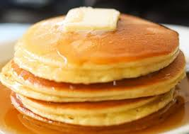
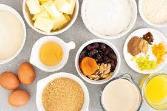

¿Do you like some pancakes?
Super easy to make pancakes are a recipe for beginners. Also known as American pancakes, hotcakes, pancakes or pancakes, pancakes are a delicacy that can be eaten sweet or savory at any time of the day. In this way, if you are wondering how to prepare pancakes the answer is simple, with whatever you want!
Homemade pancakes are an excellent option for preparing all types of dishes, as they are used to make cannelloni, to make cakes or to eat with a little honey. Learn how to make homemade pancakes in less than you think with RecetasGratis and enjoy a simple and delicious dish.
Ingredients needed
- 1 cup self-rising flour or pastry flour
- 1 egg
- 1 splash of olive oil
- ¾ cup milk (180 milliliters)
- 1 teaspoon butter
- 1 splash of honey

Steps
- First, gather all the ingredients. If you don't have self-rising or prepared flour, which is wheat flour that already includes yeast (also called pastry flour), you can use regular wheat flour and add a teaspoon of baking powder (baking powder).
- Place the flour in a bowl and add the egg and milk. Mix well until these ingredients are integrated and there are almost no lumps left.
- To finish making the homemade pancake dough, add a splash of oil and mix well. You will see that the oil completely dissolves the flour lumps and leaves a smooth and homogeneous dough.
- To make the pancakes, heat a frying pan over medium-low heat with a little oil or butter. When the pan is hot, add a tablespoon of mixture and leave it on the heat until bubbles start to appear on the surface, then turn it over and cook on the other side.
- To serve the recipe for super easy pancakes, add a little butter and honey and enjoy. If you want to eat them with something salty, you can serve them with bacon and fried eggs or scrambled with ham.